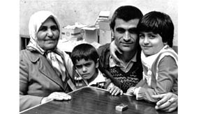
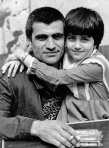
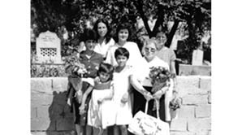
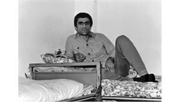
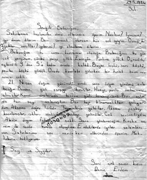

“Uykumda Bile Birileri Yok Oluyor.”
Deniz Erdem5
12 Eylül döneminde annem, şu anki soyadıyla Seher Şentürk, babam Süleyman Erdem, Dev-Sol örgüt üyeliği suçlamasıyla içeri alındılar. Babam 4 yıl, annem de 2.5 yıl Metris Cezaevi’nde kaldı.
Darbeden Önceki Günlerimiz
Psikolojik bir savunma olarak geçmişi silmek aslında benim en büyük sorunlarımdan biri oldu. Daha çok insanların anlattığı hikâyelerden biliyorum geçmişimi. Ancak üzerine çalıştıkça bir şeyler hatırlamaya başladım. Net olarak hatırladığım şey aslında yalnızlık haliydi. Annemle babam, kardeşim doğduktan 40 gün sonra onu anneanneme bırakmak zorunda kaldılar. Babam Sivas’ta öğretmenlik yapıyordu. Annem de defterdarlıkta sicil şefiydi. Sivas’ta siyaseten önemli isimler olduklarından, babamın, özellikle eğitmenlik yaptığı dönemde, çok ciddi baskıya uğradığını, birkaç kez kurşunlandığını, öldürülmeye çalışıldığını biliyorum. Bu yüzden evimiz pek güvenli değildi, hatta bir süre valilik üzerinden başvurulup polis koruması aldığını biliyorum babamın. Okula sabah polislerle bırakılıp, akşamüstü tekrar eve getirildiğini hatırlıyorum. Evimizin kurşunlandığını biliyorum. Kendi yalnızlığım içinde, çok kalabalık anlar hatırlıyorum. Çünkü çok yoğun bir dönemdi. Sürekli bir tehlike hali, güvende olmama hissi vardı. Bunları çok anlamlandıramasan da etkilerini yaşıyorsun; kardeşimin başka bir yere gönderilmesi, benim annemlerle beraber kalmam gibi.
Annemle babam, 12 Eylül olmadan önce, eylülün ilk haftasında Sivas’ta gözaltına alındılar. Aslında biz 12 Eylül’ü darbe gelmeden önce yaşadık. Hatta eve gelip annemi aldıklarında beni de onunla beraber almak istemişler, annem beni komşulara teslim ederek kurtarmış. Yani ben de onlarla beraber alınabilirdim, ilk gözaltına alınmamı onlarla yaşayabilirdim, 5 yaşında ama o ana dair veya ne yaşadığıma dair çok şey hatırlamıyorum açıkçası. Daha çok anlatılanlar üzerinden hatırlıyorum. Mesela ev baskınlarını veya aramaları hatırlamıyorum.
Sivas’ta önemli isimler oldukları için aslında Seher Erdem ve Süleyman Erdem’i alırlarsa Sivas’taki politik hayatı bitirebilecekleri gibi bir mantıkla gözaltına almışlar annemle babamı. Biz darbeye daha önce yakalandık ama şöyle bir şans oldu: Eylülün ilk haftası darbe olmadan önce alındıkları için, yalnızca bir hafta kaldılar gözaltında. Ağır işkence gördüler; fakat o zaman gözaltı süresi bir hafta olduğundan daha fazla tutamamışlar içeride. Serbest bırakıldılar savcılık tarafından ve hemen ardından 12 Eylül oldu. Eğer serbest bırakılmasalardı, 1 hafta olmasaydı gözaltı süresi, 12 Eylül’e cezaevinde gireceklerdi. Gözaltı süresince haklarında suç unsuru teşkil edecek bir şey bulunsaydı, cezaevine gireceklerdi. Hatta 90 güne çıkacaktı gözaltı süreleri o zaman. Bir şans tamamen.
Gözaltından çıktıkları ve darbe de geldiği için Sivas yaşanılmaz hale gelmişti bizim için. Orada kalmak sorunluydu ve biz üçümüz Sivas’tan ayrıldık. Daha sonra Sivas’ta bir dosya açılarak haklarında delil toplanmaya, suçlanabilmeleri için herkes sorgulanmaya başlanmış. Fakat biz artık şehirden ayrılmış ve aslında kaçak yaşamaya başlamıştık. Kimse nerede olduğumuzu bilmiyordu, ailemiz dahil olmak üzere. Önce Malatya’ya gittik, arkasından da İstanbul’a geçtik.
Kız kardeşim hep anneannemdeydi, o çok küçük olduğu için yanlarına alamadılar; bu, ağırlığını sonrasında algıladığım bir şey. O anda çok farkında olmadığım bir durum.
Annem ve Babam Götürülüyorlar
İstanbul’daydık, kimsenin haberi yoktu. Yaşadığımız semtte ilkokula başlamıştım. Annem ve babam Ocak 1983’te yakalandılar. Ben de evdeydim o sırada. Komşular aracılığıyla beni teyzemlere emanet ettiler. Onlarda kalmamın en sağlıklısı olduğuna karar verdiler, en güvenli yerin orası olduğunu düşünmüşlerdi. Annemle babam cezaevinde oldukları süre içinde kardeşim anneannemde kaldı, ben ise teyzemde. Ben İstanbul’da yaşadım, kız kardeşim Erzincan’da. Sonra anneannemlerin İstanbul’a taşınmasıyla beraber yakınlaştık. Bu süreç içinde kız kardeşimle çok nadiren görüştük. Artık ortaokula gittiğim ve anne babamın cezaevinden çıkıp tekrar bir araya geldiğimiz ve aile olduğumuz zaman, tanıştım aslında kız kardeşimle.
Galiba en kötü zamanlarım ilkokul döneminde yaşandı. Çünkü öncesi kötü olsa bile annem ve babamla beraberdim. Sonrasında hiç anlayamadığım bir sebeple onlar alındı ve bir şekilde onlara ceza verildi. Suçlarının ne olduğunu bile bilmiyorsun ve zaten çocuk aklınla neyi çıkarabilirsin buradan bilmiyorum, tek bildiğim ya da onların bana söylediği güzel bir dünya kurmak için yola çıkmalarıydı. Sonrasındaki süreç yalnızlık, yoğunlaşan bir yalnızlıkla geçti. Teyzemlerin yanındaydım, bana gerçekten çok iyi baktılar ama annemlerin içeride olduğunu hiç kimseye söyleyemiyordum. Çünkü çevreden gizliyorduk zaten. Okulda öğretmenlerim ve arkadaşlarım dahil, kimseye söyleyemiyorduk. Bir kere, çok net bir suçluluk duygusu var. Utanç var, kötü bir şey var ortada, sebebini bilmediğin. Ve gizlenme hali, kimseyle paylaşamama, söylememem gerektiği bilgisi var. Biraz daha öncesinden alırsam, kaçtığımız dönemde aile dahil kimse bilmiyordu nerede olduğumuzu, bilmemeleri gerekiyordu ve dolayısıyla ben o zaman başladım yalan söylemeye, yani gerektiği gibi davranmaya. Biz çok nadir de olsa aileyi ziyarete gidiyorduk ve onlar bizim Almanya’da yaşadığımızı biliyorlardı, İstanbul’da olmamıza rağmen. Ve ben o sırada daha ilkokula başlamamışken, haritada Almanya’nın nerede olduğunu bile bilmiyorum aslında, Almanya nedir, orada nasıl yaşanır, nasıl bir kültürdür, bu tür bir bilgim olmamasına rağmen Almanya hikâyeleri anlatıyordum. Bunları nereden ve nasıl uydurduğumu bilmiyorum. Nasıl beceriyordum, onu da bilmiyorum ama o zaman yalan söylemeye başladığımı, bunun sonraki etkilerini, yani darbeden sonra teyzemlere bırakılınca, sessiz kalmanın ve gerçek hikâye yerine, gerçeklik yerine başka bir şey koymanın bende çok büyük bir kırılmaya yol açtığını biliyorum. Gerçeğin yerine başka bir gerçeklik oluşturuyorsunuz. Bu, dış dünyaya karşı koruma adına yapılan şeyin içeride çok daha ciddi sonuçları oldu. Gerçekliğin kırılmasına sebep oldu. Çünkü bunu belki büyükken yapmak, belli bir mantığa oturtmak insan sağlığını bozmayabilir. Bunu da belki olarak söylüyorum ki, bozar bence. Ama bir çocuğun bunu yapması, ki kendi sebepleri üzerinden değil de öyle gerektiği için yapması, anlamını bilmediği bir sebeple kendiyle bağlantısını koparıyor. Benim için de öyle oldu. Gerçeklikle bağlantımın kopmasına sebep oldu. Bu, birçok şeyin yanında 12 Eylül’ün benim hayatımdaki en büyük etkisi aslında. Benim üzerimdeki en büyük darbesi, kişisel darbesi. Bu çok büyük bir yalnızlığa sebep oldu, çok büyük bir suçluluk duygusuna sebep oldu. Bunun içinde terk edilmişlik duygusu, sebebini bilmediğin şekilde birilerinin hayatından alınması var. (ağlıyor)
İlkokul arkadaşlarım vardı aslında. Onlarla oyun da oynadım ama onlardan bir şey gizlemem, hayatımın en temel bilgilerini gizliyor olmam çok önemli bir sorundu. Çünkü, onlardan aslında kendimi gizliyordum. Bu da oyuna katılmaya, içine dahil olmaya çalışırken olamamanıza sebep oluyor. Çünkü onları kendi hayatınıza alamıyorsunuz, ancak gerçeği paylaştığınızda birilerini hayatınızın içine alabilirsiniz ve size dokunmalarına, size sevgi göstermelerine izin verebilirsiniz. Gerçek iletişim yolu oradan geçiyor ve ben o iletişimi yaşamıyordum.

Deniz, anneannesi, kuzeni ve babasıyla beraber
Her hafta düzenli olarak annemle babamı ziyarete gidiyordum. Bu hep hafta içi oluyordu. O ziyaretlerin de gerçekleşip gerçekleşmeyeceği belli değildi. Teyzem sadece denemek üzere beni alıp, haftada bir gün götürüyordu ve öğretmenimin bile haberi yoktu. Dolayısıyla haftada bir gün okula gitmiyordum. En sonunda bir gün, 23 Nisan’dı hatta, ben 23 Nisan kostümlerimle gittim okula ve öğretmenimden izin istedim, ben bugün katılamayacağım diye. O da “Hayır ben sana izin veremem, neden böyle bir izin istiyorsun” dedi. Ben, sebebini açıklayamıyorum, sadece benim izin almam gerekiyor diyorum ama sebebini söyleyememek zaten çok zorlayıcı bir şey. Ben ağlamaya başlamışım

Süleyman Erdem, Deniz Erdem
öğretmenimin önünde. Öğretmen ısrar ediyor ne olduğunu anlamak için, kötü bir şey olduğu belli. Aslında konuşamamaktan ağlıyorum sadece. En sonunda söylemek zorunda kalmışım. Çünkü kaçacak yerim yok artık. Babamı ziyarete gideceğim demişim, öğretmen şok geçirmişti, neyse ki sol görüşlü biri ve çok tatlı da bir adamdı, o da ağlamaya başladı karşımda o halimi görünce. Sonra teyzemi çağırdı görüşmek için. “Bana neden söylemediniz, her hafta düzenli olarak bu çocuk okula gelmiyor, belki ben ona başka bir şey yapabilirdim” demişti. Mesela burada olduğu gibi, biriyle paylaşıyor olmak önemli bir şey. Gerçi bu çok büyük bir fark yaratmıyor. Belki biriyle paylaşmış oluyorsun ama o kadar kapalı bir hale geliyorsun ki sana sevgi gösteren insanların bile sevgisini alamıyorsun. Teyzem bana şunu söylüyordu hep, ben hatırlamasam da: “Sana yaklaşmaya çalışıyordum, sana dokunmaya çalışıyordum; fakat ağlamaya başlıyordun” diyordu. Çünkü şöyle bir yalnızlık o: Görüşe gidiyoruz, kirli çamaşırlar alınıyor, yıkamak için eve getiriliyor. Ben gece gidip sepetten çalıp, koklayıp, onlarla uyuyorum. Bir de şu boyutu var: görüşe gidiyorsun, görmek istiyorsun ama o da başka bir kötü deneyim. Açlık grevi yaptıkları, işkenceye alındıkları veya tek tip giyinmedikleri için görüşe çıkarılmıyorlar bazen. Çıkarıldıklarında ise görmek istediğin kişiyi görüyorsun ama istediğin görüntü değil o, gözlerinin önünde o insanların değiştiğini görüyorsun. Fiziksel olarak da zarar gördüklerini görüyorsun, kilo verdiklerini, dayak yediklerini... Bu yıpratıcı bir şey. Tabii bunu birilerine, yakınındakilere bile anlatmak çok zor. Birine açılman ancak çok bilgili birinin sana yaklaşmasıyla, gerçekten senin nasıl bir travma yaşadığını anlayabilecek birinin sana yaklaşmasıyla olabilir. Teyzem bunu anlayabilecek durumda biri değildi. Çok seviyordu beni ama nasıl yaklaşacağını bilemiyordu doğal olarak. Bana çok iyi bakıyorlardı ama ben çok sessizdim.

Deniz, annesi Seher Şentürk, kardeşi Roza Erdem ve
yakınları için ziyarete gelmiş diğer kadınlar
Bir de, bir şey yaşanır, başlar ve biter. Bu bitmiyor. Mesela annem bir ara salıverildi ve bir anda eve geldi. Babam hâlâ cezaevindeydi. Sonra bir gece uyuyorduk, askerler sabaha karşı gelip, annemi tekrar almışlar evden. Ben uyuyormuşum o sırada, sabah kalktım ki annem yok. Annem sonradan bana görüşe gittiğimde “Seni uyandıramadım ve bunu görmeni istemedim” dedi. Ama hani uykumda birileri yok oluyor. Gözünle gördüğün şey ayrı zor, bu sefer uykunun içine giriyorlar. Sen uykudayken birilerini çalıyorlar senden. Bu yüzden anneme çok kızdığımı biliyorum, beni niye uyandırmadın diye. O ise kendince beni korumaya çalışıyor. Bunu bilsen de en yakınındaki insanlar annen ve baban, sen onlara kızgınlık yaşıyorsun. Bütün bir dünyaya kızamayacağına göre muhatap olduğun kişilere kızıyorsun ve bu çok büyük bir öfke yaratıyor. Bunun karşısında sesini çıkaramamak çok zor.
Birkaç kere kız kardeşim de gitti annemleri ziyarete. Onlar, dedem vefat ettikten sonra İstanbul’a taşındılar. O da geldi ama daha az gidebildi ziyaretlerine. Daha çok mektuplaşmalar var, bizi yalnız bırakmamak için buldukları yöntem olarak. Ki her zaman mektup izni de yoktu.
Kardeşim o zaman okula başlamıştı. Bu dönemde “Kardeşim nerede?” diye sorup sormadığımı aslında hatırlamıyorum. Bununla ilgilenip ilgilenmediğimi de bilmiyorum. Çok fazla şey vardı içimde ve ben sadece kendime gömülmüştüm. Yıllar sonra bir araya geldikten sonra “Bir kardeşim var benim evet” dedim. Daha önce uzakta biri vardı, çok nadiren gördüğüm biri ama onu kardeş gibi algılamıyorum aslında. Bilgi olarak vardı sadece.
Aile Oluyoruz...
Annem çıktıktan sonra, annem, ben ve kız kardeşim bir araya geldik; anneannemde yaşamaya başladık. Sonra babam 1987’de çıktı. Babam çıktıktan bir süre sonra ayrı bir eve geçtik ve ilk aile oluşumuz öyle gerçekleşti.
Şunu çok iyi hatırlıyorum aslında: Ben, o okul döneminde sürekli başkalarının ailelerini izliyordum. Sen sahip değilsin ve hayranlıkla, kıskançlıkla, özenerek izliyorsun. Neyse, o anki duygumu tam olarak bilmiyorum ama onları izlediğimi biliyorum. Sonra, bir anda babam çıktı, biz bir aile olduk ve bu çok tuhaf bir şeydi. En çok umut vardı o zamana kadar, bu kötü şeylerin bir gün geçeceğine dair. Çünkü babam ve annemin mektuplarında hep o vardır, beraber şöyle yapacağız, böyle yapacağız, sizi şuralara götüreceğim, bunu yedireceğim, hayatımız şöyle olacak diye, hep onların sunduğu o umuda tutunmak vardı. Yıllar sonra, yani babam vefat ettikten sonra fark ettiğim, bir şeyi gerçekleştirmiş gerçekten, gerçi çok beceremedi vaat ettiği şeyleri yapmayı ama... Hep beraber yaptığımız tek şey olarak hatırlıyorum onu, yani iyi dönem olarak hatırlıyorum, memlekete gittik gezmeye, doğduğumuz yerleri, akrabaları gördük, oralara gidip beraber dolaştık. Belki de tüm hayatımızda aile olarak düzgün ve mutlu ya da umut edilen şeyi gerçekleştirdiğimiz bir tek o an var, sonrasında zaten her şey kötüye gitti.
Yeni de bir dönem başladı ondan sonra. Biri öğretmen, biri defterdarlıkta sicil şefi olan iki insan ve bir anda hayatları sıfırlanıyor. Her şeylerini geride bırakıyorlar, cezaevine giriyorlar ve çıkıyorlar. Hiçbir şeyleri yok hayatta. Bir de zaten ağır bir travmanın içinden çıkmış durumdalar. Onlar kendilerine tutunacakları şeylere tutunarak ayakta durmuşlar; fakat bir yandan hayat akıyor dışarıda ve tabii 12 Eylül’ün hayata yaptıkları da var. Cezaevinden çıkıyorlar ve bir anda o hayatın içine düşüyorlar. Tabii para kazanmaları gerekiyor. Bir aile kurmak, onların geleceğini oluşturmak, bildikleri bir şey de değil bu zaten. Babam yurtdışına çıkamıyordu, memuriyet yapamıyordu, mesleğine geri dönemedi. O yüzden başka şeyler yapması lazımdı para kazanmak için. Ne yapacaklar? Ticaret. Babam birtakım işler yapmaya çalıştı. Gerçekten çok beceriksizdi o konuda. O ruh halinde ağır bir yenilmişlik duygusu da vardı. Zaten fiziksel olarak da çok güçlü değildi babam. Hastalandı, birçok hastalık ortaya çıkmaya başladı. Cezaevindeki koşullar sebebiyle sonradan ortaya çıkan şeyler oldu. Midesinden rahatsızlandı önce, sonra akciğerlerinde problem çıktı. İki kere menenjit geçirdi. Sonra kanser oldu zaten. İlik kanserinden kaybettik onu. Bir de böyle bir boyutu var, cezaevinin yarattığı sağlık sorunları sebebiyle peş peşe fiziksel yıkım da başladı. Annem cezaevindeki koşullar yüzünden çıkar çıkmaz bronşiyel astım oldu ve epey ağırdı durumu. Geceleri krize giriyordu ve ölecek diye hastaneye zar zor yetiştiriyorduk. Biz iki çocuk, aile ortamı diye böyle bir şeyin içine düştük. Bir sürü sorumluluğu üstlenmeye başladık, zaten daha önceden üstlenilen yeterince sorumluluk vardı, hayatta kalma sorumluluğu, onların uzakta olmasıyla baş etme sorumluluğu, bir de şimdi onların sağlık sorunları dahil olmak üzere hayatımızı hep beraber devam ettirme zorunluluğu vardı. Kardeşim çok küçüktü daha, hatırlıyorum ilkokula gidiyordu ve kendi kendine yemek yapıyordu. Onu becerebiliyordu. Annem hasta, babam ayrı bir şey yaşıyor, bu sefer de hayatı devam ettirmenin sorumluluğu bindi üzerimize.

Süleyman Erdem cezaevinde
Babamın cezaevi sonrası normal hayata adaptasyon süreci çok problemli oldu. Anneminki de ayrı. Babam, uğradığı ağır yıkım ve maruz kaldığı insanlıkdışı muameleden ötürü çok daha yıpranmış olarak çıktı. Annem biraz daha güçlüydü. Babam toparlayamadı kendini. Onun çok ciddi öfkesini görüyordum. Hayata karşı, kendisine karşı öfkesini görüyordum ve pişmanlıklar, ne yapacağını bilememe, onun altında çok ezildi O. Toparlayamadı, adapte olamadı zaten. Olamayışı belli, üst üste hastalıklar ve sonrası kayıp. Tutunamadı hayata. Annem bizim yüzümüzden tutunabildi belki. Çünkü kadınlar biraz daha farklı galiba, yani sırf çocuklarının hayatı için tutunabiliyorlar hayata. Babama o yeterli olmadı. Annemin, bizim için, ayakta durduğunu biliyorum.
Tabii sonra bir de boşanma süreci var bunun içinde. Birbirini çok severek evlenmiş iki insan bunlar ama sadece onların uğradığı, maruz kaldığı durumların dışında arada yaşanan bütün bu şeyler ki, bunun içinde politik süreçler de var, o çaresizliği birbirlerine yöneltmeye başladılar ve birbirleriyle yaşayamaz hale geldiler. Benim üniversiteye başlayacağım sene, annem boşanma davası açtı.
Kız Kardeşimle Tanışıyorum
Ben ortaokula, kız kardeşim ise ilkokula giderken, bir araya geldik ve tanıştık. Gerçek tanışma o zaman oldu. Annemle babamın ilişkilerinin hızla bozulduğu bir döneme denk geldi ve biz birbirimize tutunduk. Cidden evde çok ağır koşullar vardı. Kavgalar, ağırlıklı olmak üzere, bizler için çok sağlıksız bir ortam vardı ve biz birbirimize tutunduk. İnanılmaz bir ilişki doğdu ondan sonra aramızda. (ağlıyor) Şunun gibi: Birbirinin hem annesi hem babası, arkadaşı, yoldaşı olmak gibi. Bu dönemde kazandığım en büyük şey, dünyadaki en önemli varlık benim için. Çok tatlıdır O, dönem dönem ben ona yardım ediyordum, dönem dönem o bana yardım ediyordu. Annemle babam kavga ederlerken bu seslerden, evde olup bitenlerden uzak durmak için balkona kapatıyorduk kendimizi. Büyük ihtimalle oradan atlamayı da düşündük beraber, belki yalnız olsaydım yapabilirdim ama o öyle bir mucizevi bir şey olarak yanında ki! Aynı duruma maruz kalıyorsun, hikâyen aynı. Birbirimizin elinden tuttuk, hayatta kalmak üzere. Bu hep böyle oldu bugüne kadar. Üniversite yıllarımda depresyon geçirdiğim, doktordan güya yardım almaya çalıştığım ama alamadığım dönemde o yanımdaydı. Biz Eskişehir’de kardeşimle aynı okulda okuduk, benim ardımdan o da konservatuvara girdi. O da oyuncu. Aynı evde yaşıyorduk ve ben, o dönemde geçirdim depresyonu. Beni kardeşim tedavi etti sevgisiyle, o zaman anladım kardeşliğin çok önemli bir şey olduğunu.
Onların Arasında Büyüyorum
Gerçekten ben birçok insan tanıyordum ve kocaman adamların, kadınların ortasında büyüdüm. Sanki o mücadelenin de bir parçasıymışım gibi, komik bir şekilde, küçücük halimle o komünist kültürün içinde büyüdüm. O ilişkiler biçiminin içinde geçti çocukluğum. Oradan aldığım çok önemli kazanımlar var. Benim şu an sahip olduğum olumlu değerler oradan geliyor ve onlara sahip çıkıyorum. Onlar cezaevinden çıktıktan sonra bir şekilde bağlantılarını devam ettirdiler.
Biz bu arada sürekli gözlem altındaydık, evimizin önünde hâlâ polis bekliyordu minibüs içinde. Annem artık onlarla dalga geçiyordu. Sabah işe giderken uyuyan polis arabasının camına vurup, “Ben işe gidiyorum uyumayın” diyordu. Böyle bir ortamın içindeydik sürekli. Üniversiteye başladığımda, Eskişehir’e gittim. Benim, Eskişehir’de olduğum dönem, üniversitelerde politik ortamın son dönemiydi ve bir şekilde dahil olmak istiyordum aslında. Fakat anne ve babamın durumu yüzünden ben o politik ortamın içine de giremedim. Eylemlere katıldım tek başıma, herhangi bir fraksiyona dahil olmadan. O eylemlerden bir tanesinin ardından hemen İstanbul’a annemlere uyarı geldi “Kızınızı uyarın, hiçbir şey yapmasın, gözümüz üzerinizde.” gibi. Aralıklarla İstanbul’daki eve baskınlar da yapılıyordu zaten. Korkutmak, sindirmek ve herhangi bir şey yapılmasın diye uyarmak için. Sonrasında da devam etti ve dolayısıyla ben aslında, kendi başıma, bir politik sürecin içinde de yer alamadım.
Başta aktif olmak isterken sonrasında kendi ailemle yüzleşirken politikayı da reddedip hiçbir şey yapmak istemediğim bir dönem oldu. Sürekli ölüm haberleri, sürekli kötü şeyler, hayat sadece böyle bir şeymiş gibi görünmeye başlıyor. Bu bir süre devam etti ve sonra bendeki sorunlar ortaya çıkmaya başladı. Önce her şey bir süre idare edilebiliyor güya artık normal görünen bir yaşam akmaya başladıktan sonra ama ben üniversiteye gittikten sonra bendeki sonuçları ortaya çıkmaya başladı yaşadıklarımızın. Çok sağlıklı değildim. Gerçi kuşağımın, benim gibi yaşamış insanlarının da ciddi psikolojik sorunları olduğunu görüyordum. Uyuşturucu bağımlısı insanlar olduğunu, apolitik, politikayı reddeden insanlar olduğunu, hatta kitap okumayı reddeden örnekler olduğunu biliyorum. Benim şansım çevremde iyi insanlara denk gelmek oldu galiba. Çünkü, hâlâ öyle birileri vardı ve hani kendimi biraz kurtarma, bende ne olduğunu anlama sürecine girdim ondan sonra. Gerçekten çok sağlıksız ilişkiler kuruyordum dünyayla, o yalnızlık hissi hep devam ediyordu, anlaşılamama hissi de. Bir de kendine acıma temel sorunlardan biriydi. Herkes sanki normal bir hayat yaşıyordu ve sadece ben kötü bir şey yaşamıştım. Tabii o sırada dünyayı göremiyorsun aslında. Birçok insanın aynı şeyi yaşadığını, bunun aslında toplumsal bir travma olduğunu göremiyorsun. Sadece kendini biliyorsun ve bu bir acıma duygusu yaratıyor. Zavallılık hissi, bitmeyen, “ah benim başıma neler geldi” diye hayıflanan ve fazla duyarlı, hassas, ayaklarının üzerinde duramayan bir kişilik ortaya çıktı bende.
Ben profesyonel anlamda destek almak istedim; fakat çok yanlış kişilere denk geldiğim için bunu reddettim. Bir psikiyatrist ile görüşme yaptım. Bana çok dikkatle yaklaşılması gerekirken, beni uzaktan yakından anlayamayacak birine denk geldiğim için vazgeçtim ve kardeşim dışında tek yardımcım her zaman kendim oldum. Sonra tiyatroya girdim, konservatuvara. Oyunculuk eğitimiyle, insanı tanıma süreci başladı. Bunun yanı sıra kendi kendime yardım etmek için, psikoloji öğrenmeye başladım. Sonrasında başka kişisel gelişim çalışmalarına katılarak, psikiyatrik olmayan alternatif yardımlar aldım ve ancak öyle yavaş yavaş rahatlayıp ayaklarımın üzerinde durmaya başladım.
Kendimi Yeniden Keşfim
Küçükken kızgınlığım Kenan Evren’eydi bir sembol olarak. Şöyle hayaller kurduğumu, bir intihar eylemi planladığımı hatırlıyorum, bombayla Kenan Evren’in yaşadığı evin üzerine düşmek gibi, atlayıp onu da kendimi de öldürmek gibi. Tek sembolleştirdiğim şey, karşıma alabildiğim şey, annem ve babam dışında, ki onları da anlamak zorunda kaldım, o yüzden Kenan Evren’di. Kenan Evren tüm olanların sembolik sorumlusuydu. Sonrasında olayları kavrayınca, bunun çok daha büyük bir şey olduğunu, aslında yalnız olmadığını, uzun, sistemle planlanmış bir süreç olduğunu fark ettiğimde değişti bakış açım. Böyle algılamak, tabii sağlıklı hale getiriyor insanı. Bir kere yalnız olmadığını fark ediyorsun, çok daha büyük bir şey bu. Bir de çocukça değerlendirmek çok farklı bir şey, büyüdükçe bilgiyle değerlendirmek farklı, çok öfkeliydim, gerçekten çok öfkeliydim. O sessizliğin verdiği bir biriktirme de vardı. Bir şekilde bunu daha erken boşaltabilseydim belki daha farklı olurdu ama ben, bu kızgınlığımla yüzleşmemi önce annemle, babamla yaşadım. Tabii tüm dünyaya da böyle bir öfke vardı. Çünkü haksızlığa uğramak çok ağır bir şey, kendimi haksızlığa uğramış hissediyordum ve her olayı da böyle karşılıyordum: Ben yalnızım ve dünya benim karşımda gibi. Bu çok ağır geliyordu. Önce annemle, babamla yüzleştim, sonra da bu öfkeyi sağaltıcı yöntemler öğrendim ki, oyunculuk aslında biraz onun yolu. İnsanların mesleklerini çok rastlantısal seçtiklerini düşünmüyorum, bunu da sonradan çok net anladım. En temel şeylerden biri, ben görünmez olmayı seçmişim, sonradan fark ettiğim o. Kendini silme ve yok etme hali, ben yokum aslında ben görünmezim gibi bir sonuca sebep olmuş. Kendi gerçekliğini ortaya koymadığın sürece yoksun aslında. Sahte bir kimlikle geziyorsun. Çünkü olman gereken bir insan olarak yaşıyorsun. Güçlü, ayakları üstünde duran, dışarıdan görünen oydu eminim, o rolü becermişimdir. O öğretildi bana çünkü; ama içerisi öyle değil tabii. Bu anlamda kardeşim ve benim oyunculuğu seçmemizin sebebi Darbe’dir demek yanlış olmaz. Çünkü en görünür olabileceğin, bunun mücadelesini verebileceğin ve kendini var hissedebileceğin yer orası. Bir sürü insanın karşısına çıkıyorsun. Oyunculuktaki en önemli şey, enstrümanın bedenin, sensin yani. Sen kendi görünmezliğinle mücadeleyi, kendi görünür olma yolunu bu şekilde buluyorsun. Ben öyle buldum ama bu o kadar kolay olmadı. Sahnede bile saklandığımı biliyorum. Bünyem oyunculuğu reddediyordu. Bu da çok ilginç bir bağlantı bence, zaten rol yaptığım için ve yalan söylemeyi çok iyi bildiğim için sahnede bunu yapamamaya başladım. Çünkü sahnede yapamazsınız bunu, inanmanız lazım ona. Şimdi, zaten normal hayatta oyunculuk yapan biri, sahnede ikinci kere bunu yapamıyor, taklidin taklidi gibi bir şey oluyor ve bu bayağı anormal bir duruma dönüşüyor. Fakat bu beni nereye yöneltti, gerçeği aramaya yöneltti. Orada, sahnede ayakta duramamak, saklanıyor olmak... Ben gerçeğin peşine takıldım. Ben kimim, neyim aslında? Bu soruyu yanıtlayabilmemin ilk yolu, geçmişteki bütün değerleri, kim olduğumu, neysem onu sorgulamak oldu. Bana ait olanlar ve olmayanlardan temizlenmem gerekiyordu ve bunun içine annem ve babam dahi giriyordu. Bana öğretilen hayat görüşünü değiştirmek, aslında yaşam kötü bir şeydir, sadece haksızlık vardır düşüncesinden çıkmak ve ölüme değil de yaşama tutunmak. Çünkü sürekli ölüm haberlerinin içinde yaşıyorsun, yaşama tutunmayı öğrenmen gerekiyor hayatta kalabilmek için. Seni besleyen tek şey bu hayatta: sevgi ve yaşama tutunmak, bir de tabii güven duygusu ve adalet hissi. Bence insanı ayakta tutan en önemli şeylerden biri adalet kavramı, değeri ama bu değerden yoksunuz. 12 Eylül sürecinin en büyük sorunlarından biri zaten bu, o haksızlığa uğramışlığın bir şekilde çözülebilmesi için senin adaletle yüzleşmen ve adil bir süreçle karşılaşman lazım, hakkının teslim edilmesi gerekiyor ama bu hak teslim edilmek yerine, yok sayılıyor ve sen sanki bunları yaşamamışsın, dünya ya da Türkiye bunları yaşamamış gibi bunlar hasıraltı ediliyor.
Dolayısıyla bireysel bir yolculuğa dönüştü sonrası, kendini var etme, ayakta kalma yoluna. Bunun için de eski değerleri yıkıp kendi değerlerimi, kim olduğumu yeniden yaratma süreci başladı. Gerçeği bulmak dediğim şey o. Ben, o gerçekle bağlantımın kopması hikâyesine çok önem veriyorum. Çünkü insanın, sonradan öğrendiğim en temel şey, kendiyle bağlantısının yolu, o hakikatten geçiyor. Kendi içinde hakikati, hakikat dediğim şey ise kişinin sadece hissettiği, o anda olan şey neyse onu hissedebilmek. Onun yerine yeni bir şey koymadan yaşayabilmek ama ben kendimle bağlantımı kaybettiğim, bir savunma mekanizması ve hayatta kalma yolu olarak sahte bir kimlik yarattığım için, bunu yıkmam ve gerçek acıyla, içeride olup bitenle yüzleşip bunu ifade etmem gerekti. Bu da bayağı uzun zamanımı aldı. Ben mesleğimi de doğru dürüst yapamadım. Profesyonel olarak yapmama rağmen sahnede hep mutsuz oldum. İyi bir oyuncu olamadım uzun zaman. Sonra tabii hayat, senin aradığın şeyleri, sen arıyorsan eğer, sana veriyor bir şekilde. Oyunculuk yöntemine dair “gerçek kavramı” üzerinden bir metot buldum ve o da beni Amerika’ya kadar götürdü. Orada o eğitimi aldım ve şimdi buradaki insanlarla kişisel gelişim metodu olarak da kullanılabilecek bu yöntemle gerçeğin peşinden koşuyoruz. Bambaşka bir yere getirdi aslında beni bu oyunculuk metodu. Başlangıca geri getirdi gibi görünüyor.
Benim, insanları da hayatıma almam çok zor oldu. Bence güven zaten ilk oradan başlıyor, herhangi birine güvendiğin anda aslında çözülme başlayacak ama terk edilmişlik hissi temelinde olduğu sürece hayatına insanları alamıyorsun, bırakıp gitmesinler seni diye. Yani güven yok herhangi bir şekilde. Otoriteye güven hiçbir zaman yok tabii ki. Çünkü süreç devam ediyor. Bu, aslında sadece 12 Eylül döneminin değil, bütün sistemlere karşı insanların yaşadığı bir şey. Tabii, 12 Eylül çok daha büyük ve net bir şekilde karşımızda duruyor, bütün yarattığı yapısıyla ve insan tipiyle. Tabii, hiç güvenim yok ama bunun sağlıklı bir hale geldiğini söyleyebilirim. Çünkü ben otoriteye güvenin gerekli olduğuna inanmıyorum şu anda. Güvenebilmen için zaten başka koşulların olması gerekiyor; zaten insanlık bunun mücadelesini veriyor, yeni bir yapı kurma mücadelesi veriyor. Benim tutunduğum yer, yaratabildiğim kadar kendi alanımda o güveni yaratmak. İnsanlarla güveni yaratmak, kavramlarla bunu yaratmak. Adalet duygusunu hayatıma, kendi yaşamımın içine katmak istediğim için zaten davaya müdahil oldum, 12 Eylül sürecine. O süreç ne kadar buna hizmet edecek bilmiyorum ama hani daha önce konuk olduğum bir programda söylediğim bir şey vardı o da: bu dava süreci bir kurgu olabilir ya da hiç de düşünüldüğü gibi sonuçlanmayacak, göstermelik bir süreç olabilir. Ben de diyorum ki, bu böyle başlamış olabilir, buna hizmet etmesi için de yapılıyor olabilir ama buna müdahil olan insanlar bu süreci başka bir yere taşıyabilirler. Bu otoritenin sana verebileceği bir şey değil, senin, “Ben hakkımı, adaleti istiyorum” diyerek otoritenin karşısına çıkacağın bir şey. Bunun, kendi hakkın adına dava sürecinin peşini bırakmayarak gerçekleşeceğini düşünüyorum ama yaşıyorken hakların teslim edilmesi herkes için önemli. Berfo Ana, mesela 105 yaşında ve hâlâ oğlunun kemiklerini bulmak ve bunun hesabını sormak için yaşıyor.6 105 yaşında olduğuna göre bunun için ayakta kaldığını, ölmemek için direndiğini düşünüyorum. O adalet duygusunu yaşamak her insan için çok değerli.
Annem ve Babamla Yüzleşiyorum
Babamla ilişkilerimiz tabii ki normalleşemedi. Bizim aramızda, çok derin bir sevgi vardı ama bu sevgi çok örselendi. Cezaevinden çıktığı dönemde de başka şeyler eklendi ve giderek birbirimizden uzaklaştık. O sevgi hep orada kalmak şartıyla kızgınlığı da beraberinde getiren bir sevgiydi. Ben, babam öldükten sonra babamla yüzleştim aslında. O öldükten sonra, bir oyunculuk egzersiziyle oldu bu. O zaman ne hissettiğimi ve gerçekten, ona ne kadar öfkeli olduğumu anladım. “Beni niye bıraktın bütün dünyaya karşı tek başıma.” şeklinde bir dışavurum oldu. Çünkü anne figürü de baba figürü de başka şeylere hizmet ediyor hayatında. Onlardan o sevgiyi alabilmek ve senin güvende olduğunu hissetmek çok önemli ve ben o güveni yitirdim. Erkeklerle ilişkim tam da bu yüzden zedeli. Birilerini hayatıma alamama durumu ama o yüzleşmeyi de sonradan yaşadım.
Aynı yüzleşmeyi annemle de yaşadım. Karşısına dikildim ve “Artık omuzlarımdan in” dedim önce. Sonra ağır çatışmalar yaşadık ama annem, kendini çok dönüştüren biri. Gerçekten beni anlamak için uğraştı. Kendisi de başka bir acı yaşarken, ihtiyacı varken, birbirimize yardım ettik, birbirimizi iyileştirdik.
Ben Aynı Mücadeleyi Verir miydim?
Güzel bir soru. Şimdi bazen, onlar için de geçerli bu, toplumsal koşullar seni zaten bir mücadelenin içine itiyor. Çünkü insan olarak belli değerlerin var ve politik olarak bir duruşun var. Onları sürekli anlamamın sebebi buydu, anlamak zorundaydım çünkü. Temel insani değerler üzerine hareket ediyorlardı, iyi insanlar oldukları için. Sonrasında ben de yaşam içinde çok ciddi şeylerle karşılaştım ve aynı yerde durdum. Ben de büyük ihtimalle aynı mücadeleyi verirdim. Tek sorunum çocuklar olur, benim çocuklarım olsa durumu değiştirir şu an. Ben çocuk olarak yaşadığım için o süreci, neler yarattığını çok iyi biliyorum. Çocuklarım öncelikli sorumluluğum olur. O yüzden başka türlü davranırdım, mücadeleyi farklı verirdim, onların verdiği gibi vermezdim.
12 Eylül’ün Hayatıma Etkisi
Benim kim olduğumun, mesleğimin ne olduğunun hepsinin yaratıcısı 12 Eylül ve o dönem yaşanan her şey. Hem aile içinde hem de toplumsal olarak yaşananlar, bunlar çok belirleyici. Benim şu an gerçeğin peşinde koşuyor olmam bu sebeple... bu acıklı hikâyeden geliyor ama durumumu olumlu bir hale getirdim ben, hem kendime hem de çevremdeki insanlara ne hissettiğimi ifade etmeye çalışarak. Bu böyle olmayabilirdi, ben kaybolabilirdim, hastalanabilirdim hem psikolojik hem de fiziksel olarak, uyuşturucu bağımlısı olabilirdim ben de gerçekten. Çünkü o dağılmışlıkla her şey yapabilirsiniz. O, o kadar ağır bir yalnızlık ve kendini sevememe hali ki, fahişe de olabilirdim, kendimi öldürebilirdim ama bir yerde kendini kurtarma gayretine girdiğim için bundan çıkabildim ve durumumu faydalı bir hale dönüştürdüm. Bu benim kendi kişisel başarım, hayatta kalmak için bulduğum yöntem ama gerçekten bu böyle olmayabilirdi.
Kendi Kuşağım
Ben genellikle çok daha büyüklerle arkadaşlık ettiğim için kendi yaşıtlarımı nasıl değerlendiriyorum, diye hiç düşünmemiştim ama biraz kayıp bir kuşak, çok acı çekmiş bir kuşak. Bu yüzden de Darbe’nin yarattığı travmalar bence benim kuşağım üzerinde çok etkili. Sadece direkt bunun ortasında benim gibi yaşayan insanlar için değil. Çünkü çok ciddi bir toplumsal travmanın içinden geçti bu kuşak, çocuk yaşta ağır bir baskıya ve yeni bir insan tipi yaratılma sürecine maruz kaldı. Buna direnenler oldu, kendini, insani değerlerini korumaya çalışanlar oldu ama bunu başaramayanlar da oldu. Apolitik, merak duygusunu kaybeden, yalnızlaşan ve insani değerlerinden kopan çok insan olduğunu biliyorum. O yüzden bayağı incelenmesi gereken bir kuşak aslında.
Topluma Dair
Tam bu 12 Eylül dava süreci, müdahillik süreci başladığında köşe yazarları konuyla ilgili yazmaya başladılar ve onlardan biri de şöyle dedi: “Artık bunları geride bırakmamız gerekiyor. Ben bütün bu olanların her yerde konuşulup, ta evimin içine kadar girip çocuğumu yaralamasını istemiyorum.” Bu, yok sayarak yaşama çabasına kızmıyorum sadece yanlış bir yol olduğunu bilerek itiraz ediyorum. 12 Eylül’ü sadece biz yaşamadık. Artık kendimi yalnız hissetmediğim için bir kızgınlıktan çok şu var; bunu ifade etme arzusu var. Bu köşe yazarı gibi insanların sadece şunu bilmesi gerekiyor ki: Bu, bir yerlere gizlenip kapatılabilecek, üstü örtülebilecek bir durum değil. Biz çok sustuğumuz için evet susturulduğumuz için ya da suçlu olmamamıza rağmen suçlu hissettiğimiz, konuşamadığımız için bir yerlere kapatıldığımızı düşünebilirler ama 12 Eylül her yere sinmiş durumda. Toplumsal bir travma bu. Yok saymanız onun olmadığı anlamına gelmiyor ve yok sayıldıkça da sonraki kuşaklara aktarılacak bir şey bu. O yüzden sadece kızgınlık değil de insanların bunu ifade etmesi için kendilerini anlatmaları, acılarını ve ben buradayım demeleri için katkıda bulunma niyeti oluşturuyor bende artık. Sesli konuşmak yani. Birilerinin de sesli konuşmasını sağlamaya çalışmak, şu an bu çalışmanın yaptığı gibi.
Ben de belli bir süreden sonra çok yakınımdaki insanlara, anlayabileceğini düşündüğüm, açabileceğimi düşündüğüm insanlara bunu anlatmaya başladım. Çözülme zaten öyle başlıyor işte. Birilerini iletişime davet etmek, kendini göstermeye çalışmak, benim canım yanıyor, ben bunları yaşadım demek. İnsanlara anlattım, evet, çok yakınımdaki o insanlara. Çok fazla kimse bilmez ama. Çünkü kimsenin umurunda değil, umurunda olmak zorunda da değil. Öyle bir beklentim yoktu ama yakınımdaki insanlar için vardı, onları yakınıma alabilmek için vardı.
Hiç Unutamadığım Bir An
Bu, benim yaşadığım bir an değilken başka türlü benim anım oldu. Annemle babamın hikâyesi, çok iyi bildiğim, yazışmalardan da okuduğum şöyle bir anı var. Mahkemeye çıkarılacaklar. Birbirlerinden haberdar değiller ama aynı dönem, aynı davadan yargılandıkları için, aynı zamanda çıkmaları gerekiyor mahkemeye. Annem mahkemeye götürülüyor. Hâkimin karşısına çıktığında şöyle bir şey diyor: “Ben buradayım ve Süleyman Erdem’in de burada olması lazım. O da buraya geliyor mu, getiriliyor mu?” diye soruyor. Hayır diyor hâkim, gelmeyi reddetti. Annem de “Hayır biz böyle bir karar almadık, eşimin de burada olması lazım” diyor. Sonra tek tip giyinmedikleri için mahkemeye çıkarılmayacaklarını öğreniyor. Annem mahkemeden çıkarılıyor. Onların ring dedikleri, mahkûmların getirildiği araçlar var. Bunların çok küçük havalandırma delikleri var. Her tarafı kapalı, küçük deliklerden görebildiğin kadar dışarıyı görebiliyorsun. Annem kendi kendine diyor ki, biz buradaysak, erkekler de burada olmalılar. Sesini duyurmaya çalışıyor, babamdan da ses gelmesi için. Ringde deliklere ağzını dayıyor ve Süleyman, Süleyman diye bağırıyor ama duyuramıyor sesini, yanıt gelmiyor. Annem ve babamın çok sevdiği bir türkü var, ikisinin türküsü, “İşte gidiyorum çeşm-i siyahım” onu söylemeye başlıyor. Babam duyuyor ringlerin birinden ve Seher burada diyor ve o da ringleri görüyor ve parmaklarla deliklerden yazmaya başlıyorlar birbirlerine uzaktan. Sonra o türküyü babamın cenazesinde kardeşimle ben söyledik onu yolcularken... Benim için çok önemlidir.
Annem de oyuncu olmak istemiş ama olamamış biri. Yıllar sonra yurtdışından bir yönetmen geldi. Özellikle oyuncu olmayanlarla çalışan ve kendi hikâyelerini sahnede anlattıran biri. Annem seçmelere katıldı, kabul edildi ve çıkıp kendi hikâyesini anlattı. Diğer herkes değiştirdiği halde, annemin hikâyesi aynı şekilde yazıldı. Annem bu hikâyeyi anlatır orada, bu türküyü söyler. Sahneye çıktı yani bununla. Ancak böyle iyileştirilebileceğini düşünüyorum travmaların. Bunu ifade ederek, dökerek, birilerinin ona dokunmasına izin vererek.
12 Eylül Davası
12 Eylül davası, insanların adalet duygusunun, özellikle yaşarlarken, yerine getirilmesi ve haklarının teslim edilmesi için çok önemli. 12 Eylül davası ile, dönemin darbecileriyle, işkencelere yoktur raporu veren doktoruyla, o sırada o mesleği yapan gardiyanıyla, işkenceci olarak buna katılan herkesle bütün kılcal damarlarına varana kadar yüzleşmenin gerçekleştirilmesi gerek. Nasıl benim hakkımın teslim edilmesi gerekiyor ve bana yapılanın kabul edilmesi ve benden özür dilenmesi gerekiyorsa, aynı zamanda bunun bir şekilde parçası olan her insanın da yaptığı şeyin sorumluluğunu alması gerekiyor. Sonuçlarını görmesi ve bunu sahiplenmesi gerekiyor. Bunun sonucu eğer bir sürü insanın acısını, kendi yarattığı acıyı görüp bunun karşısında vicdanen yaşayacağı şeyle yüzleşmekse, bu şekilde olsun. Ben sadece yargılanmaları açısından bakmıyorum. Çok daha insani düzeyde bununla yüzleştirilmeleri gerektiğini düşünüyorum. Kendi vicdanlarıyla karşı karşıya gelmeleri için yarattıkları sonuçları görmeleri gerektiğini düşünüyorum. Çünkü Kenan Evren ne kadar farkında benim ne yaşadığımın, onu öldürmek istediğimin ne kadar farkında? Hâlâ Erdal Eren sorulduğunda, hani gencecik, 17 yaşında bir insanın yaşı büyültülerek idam edilmesi durumuna “Yine olsa aynı kararı veririm!” cevabını veren biri, insanlığından çıkmış biri demektir ama bir insanın yaşanan acı suratına sokulduğunda, gözünün içine, dibine kadar geldiğinde, bunun karşısında duramayacağını düşünüyorum, bunu görmek zorunda kalacağını düşünüyorum ve herkesin de bunu görmesi gerekiyor. Bence sonuçla yüzleşmek asıl böyle bir şey. Tabii yargı süreci kesinlikle gerekli.
Bu dava süreciyle ilgili, annemi de takip ederek en önemsediğim şey şu: İnsanlar birbirlerine acılarını anlattılar, evet ama başka insanlara ulaştırmak farklı bir şey. Çünkü seninle aynı şeyi yaşayan biriyle paylaşmaktan daha fazlasını bekliyorsun aslında. Dünyanın duymasını bekliyorsun. Annem kendini ifade edebilen biri olarak çok şanslı ama böyle yaşamayan insanlar da var o süreci. Sessizce yaşayanlar var. Dava sürecine müdahillik için annemin o dilekçeyi yazma halini biliyorum ben, yazıp oraya gidip verme sevincini, kendini ifade etmenin yarattığı iyileştirmeyi çok önemsiyorum. Bu süreç hiçbir şeye yaramazsa bile o insanların kendilerini iyileştirmelerine ve tekrar umut beslemelerine yarayacak, yarıyor. Çünkü bu insanlar hiç umut beslemediler haklarının teslim edileceğine dair. Sadece cezaevi süreci değil, sonrasındaki yaşadıkları süreçler, hayatta karşılaştıkları şeyler de hep ağırdı ve hiç bu şansları olmadı. Bir kısmı dağılmış durumda, hayatları da öyle. O yüzden o dilekçeyi yazıp müdahil olma sürecini bile çok önemsiyorum ben. Kendilerini ifade ettikleri için.
Bir de toplumsal olarak, Türkiye olarak bu toprakların temizlenmesi için sadece bu dava değil, Maraş, Diyarbakır Cezaevi’nde yaşananlarla, birçok tarihi, 6-7 Eylül’ü de katabiliriz bunun içine, yüzleşilmesi gerekiyor. Bunlarla yüzleşilmeden, insanların yaraları iyileşmeden, ileriye adım atılamayacak. Çünkü bunlar devrediliyor. Hâlâ biz, Ermenilere yapılan soykırım mıydı, değil miydi konuşmaları yapıyoruz. Bir tanesi de dönüp ne oldu yani ne yaşandı ve bunun içinden insanlara hakları nasıl teslim edilebilir ya da bunun için ne yapılabilir, bu süreç için başka türlü katkıda nasıl bulunulabilir diye bakmıyor. Hâlâ soykırım mı değil mi tartışması yaşıyoruz. Bu devam edecek, kabul edilmediği sürece. Birilerinin acılarına dönüp bakmadığımız sürece. Ancak süreci benim gibi yaşamamış birine, o dönem farklı politik görüşü olan insanların çocuklarının acısına da dokunduğumda iyi bir şeyle sonuçlanacak. Çünkü o zaman sistemli bir şekilde aynı şeye maruz kaldığımızı göreceğiz aslında. İnsanlığımızla bir araya geleceğiz. Bu topraklar o zaman toplumsal travmalarından özgürleşecek.

Deniz Erdem’in cezaevindeki babasına yazdığı mektup